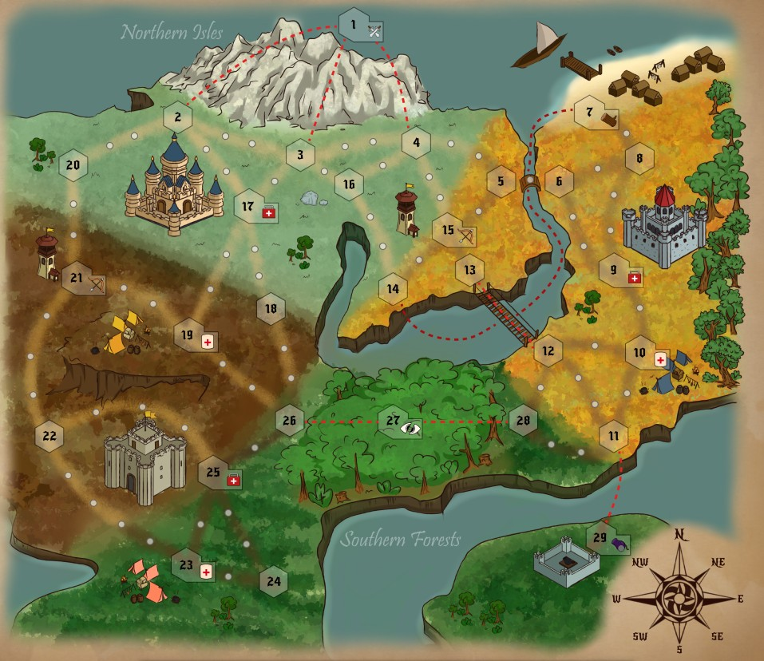

Solo hex strategy. You have eight turns to bring the assassin's HP down to zero.
You command a prince and two knights on a numbered hex map. Pick one of four strongholds; that choice also decides where the assassin starts. Lose your party or run out of eight turns, and the game is over. The eight turns stand for a rite of passage that will not wait. Land the assassin walks through is lost, like the kingdom slipping away. Conquering land gives you supplies, but you only win by killing him.
I was Design Lead. Every board mechanic is mine: formations, movement and the assassin's pathing, combat, locations, zone effects, event cards, action points, and supplies. It was the same role as on Acquit, focused on gameplay systems. I wrote the design statement and made the demo video. Art was done by the team. I helped with the rulebook and print-and-play layout.
The design statement sums up the brief: medieval problems require management solutions. A succession fight and a time-loop assassin are old story ideas. The player's tools (action points as time, supplies split three ways, formations as placement) are modern resource-management problems in a medieval setting.
This keeps the game from becoming a scripted boss fight. If the assassin were a set-piece with phases, the map would just be something you cross to reach him. Because he moves across the map and undoes your territory as he goes, every hex you conquer is both a source of supplies and a shorter path for him. Conquest works when expanding your territory and hunting the killer are the same job, done against a running clock.
Each turn opens with an event card that changes the whole board. Then come three phases (morning, evening, and night) with 10 action points (AP) each, tracked on a D20. Moving into a territory costs 1 AP. You spend AP to move and to conquer, and the land you hold is what gives you supplies.
Splitting the day into three separate budgets instead of one pool of thirty matters. A single pool would let you save the morning's points for a long march at night. Three separate budgets force you to plan your route within each part of the day, which feels closer to medieval travel than a video-game stamina bar. The assassin also moves faster at night, so the last ten points of the day are the riskiest ones to spend.
Between turns you spend supplies on three things, and you cannot afford all three.
| Spend | Buys | If you starve it |
|---|---|---|
| Heal | Survive the next intercept | You never live long enough to use the build |
| Level knights | Combat power on the figures you have | You unlock formations, but your knights are too weak to use them |
| Unlock formations | Positional combat tools | Your knights are strong but have no formation to fight in |
Levelling and formations make your party strong enough to kill him. Healing keeps you alive long enough to use them. Splitting supplies three ways is the same idea as the shared gold in Overseas: if an upgrade never competes with survival, it is not a real decision.
He is a moving threat, not a scripted boss. He takes the shortest path to the prince, skips small nodes, and moves faster at night. Any land he walks through becomes unconquered, so your income shrinks just because he passed through.
In a fight he picks from three moves based on how many of your figures are in the hex. That keeps combat from being a fixed script: the right formation depends on whether you caught him alone or as a full party, which is a positioning choice you made turns earlier, not a card you flip in the moment.
| Tool | What it does | Role in the race against time |
|---|---|---|
| Forests | Costs a whole phase to enter or leave | Trades a full phase of AP for distance |
| Mortars | Once-per-turn map-wide attack, if held | Damage him without having to catch him |
| Watchtowers | Works like a mortar, but only within its region | Pressure near the stronghold you picked |
| Formations / levels | Combat layer once you meet | Turn supplies into a win in combat |
Terrain slows him down as well as you. Formations and knight levels are what you bring when your paths finally cross.
There are four strongholds, and your pick also decides where the assassin starts. Choosing a stronghold for its land also decides how soon he starts taking that land back. There is no safe starting point, so your very first decision is already about positioning.
Early playtests felt slow and confusing. Players spent the eight turns figuring out the board instead of hunting on it. People who had not worked on the design needed a teammate to explain the rulebook mid-game. That is the wrong kind of difficulty for a solo strategy game.
What I changed, and why:
The eight turns and the day structure stayed. What we removed was the friction that got in the way of the hunt.
Rulebook
Print and play
Design statement
Also physical Acquit · a solo courtroom card game where I was also Design Lead. Instead of a time limit and an assassin, the pressure comes from evidence and a jury.
Questions soniclinxin@gmail.com · LinkedIn